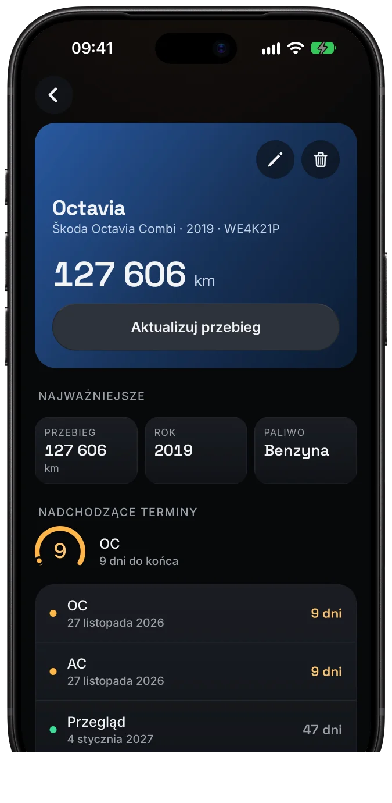
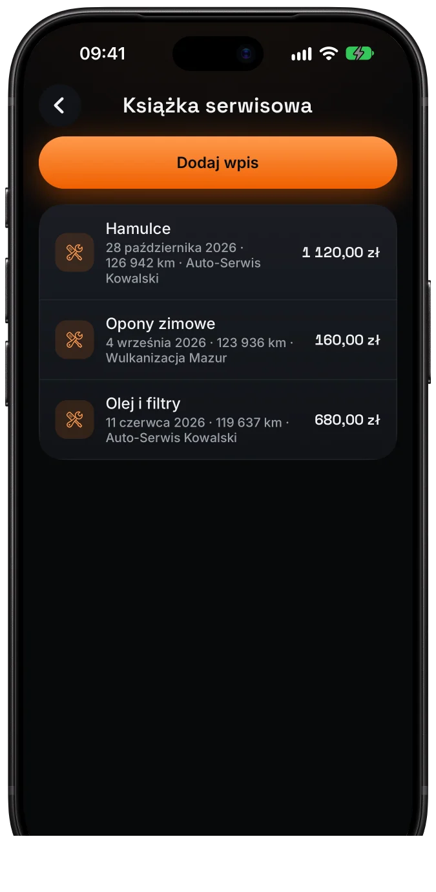
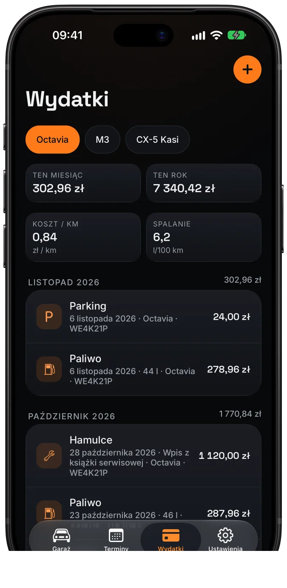

Twoje auta. Zero zapomnianych terminów.
OC, AC, przegląd, serwis i koszty w jednym miejscu. Autario przypomni na czas, policzy koszt na kilometr i zachowa całą historię auta. Bez konta, działa offline.
OC i przegląd zawsze na czas.
Wpisz termin raz, a Autario przypomni 30, 14 i 1 dzień przed końcem. Widzisz, co jest po terminie, co w tym miesiącu, a co później — dla wszystkich aut naraz. Także terminy według przebiegu, jak wymiana rozrządu.
- OC i AC
- Przegląd techniczny
- Serwis wg przebiegu
- Widżety
Dowód rejestracyjny? 3 sekundy.
Nakieruj aparat na kod z dowodu rejestracyjnego, a marka, model, VIN, rok i numer rejestracyjny wpiszą się same. Kod czytamy na telefonie, zdjęcie nie jest zapisywane, a danych właściciela nie odczytujemy.
- Kod Aztec z dowodu
- Skan polisy OC
- Paragony i licznik

Wiesz, ile naprawdę kosztuje Cię auto.
Tankowania, ubezpieczenie, naprawy, parkingi i myjnia w jednym miejscu. Autario liczy koszt na kilometr, średnie spalanie i pokazuje wydatki miesiąc po miesiącu.
- Koszt na km
- Spalanie l/100 km
- Wykresy
- Kategorie
Historia auta, która sprzedaje.
Wymiany oleju, opony, hamulce i naprawy razem ze zdjęciami faktur. Przy sprzedaży wygenerujesz raport PDF z całą historią — kupujący od razu widzi, że auto było zadbane.
- Zdjęcia faktur
- Raport PDF
- Eksport CSV
- Kopia zapasowa

Jeden garaż dla całej rodziny.
Wspólne auta, terminy i wydatki na telefonach bliskich — do 5 osób. Każdy wie, kiedy kończy się OC i kto ostatnio tankował.
- Do 5 osób
- Role: edytor i podgląd
- Zaproszenia QR
- Logowanie Apple i Google

Zacznij za darmo.
Darmowy
- 1 auto
- Terminy z przypomnieniami
- Książka serwisowa i wydatki
- Skan dowodu rejestracyjnego
- Kopia zapasowa danych
Pro 14 dni za darmo
- Nielimitowana liczba aut
- Wykresy kosztów i spalania
- Skan dowodu, polisy, paragonów i licznika
- Raport PDF i eksport CSV
- Albo 14,99 zł miesięcznie
Rodzina
- Wszystko z Pro
- Wspólny garaż do 5 osób
- Synchronizacja między telefonami
- 14 dni za darmo
Częste pytania
Czy Autario jest darmowe?
Tak. Za darmo prowadzisz jedno auto z terminami, przypomnieniami, książką serwisową i wydatkami. Pro (14 dni za darmo, potem 89,99 zł rocznie lub 14,99 zł miesięcznie) odblokowuje więcej aut, skany, wykresy i raport PDF, a plan Rodzina — wspólny garaż. Wolisz zapłacić raz? Jest też Pro na zawsze.
Czy muszę zakładać konto?
Nie. Wszystko działa bez konta i bez internetu. Logujesz się (przez Apple lub Google) tylko wtedy, gdy chcesz dzielić garaż z rodziną.
Gdzie są przechowywane moje dane?
Na Twoim telefonie. Na serwer (w Unii Europejskiej) trafiają tylko auta, które sam udostępnisz we wspólnym garażu. Szczegóły w polityce prywatności.
Jak działa skan dowodu rejestracyjnego?
Polski dowód rejestracyjny ma kod Aztec z danymi pojazdu. Aplikacja odczytuje go aparatem na telefonie i wpisuje markę, model, VIN, rok produkcji i numer rejestracyjny. Danych właściciela nie odczytujemy, a zdjęcie nie jest zapisywane.
Kiedy przypomni o końcu OC lub przeglądu?
Domyślnie 30, 14 i 1 dzień przed terminem, o 9:00. Dni przypomnień ustawisz osobno dla każdego terminu.
Jak przenieść dane na nowy telefon?
W Ustawieniach wyeksportuj kopię zapasową (jeden plik z autami, wpisami i zdjęciami) i zaimportuj ją na nowym telefonie. We wspólnym garażu dane zsynchronizują się same po zalogowaniu.